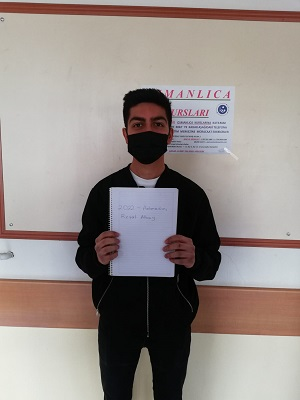

Furkan Coşkunca
Kimim Ben:
Öncelikle herkese merhabalar.Ben kimya hocası Furkan Coşkunca.Kırıkkale Üniversitesi Eğitim Fakültesinden mezunum.Aslında lisede başlaması gereken kimya dersine olan ilgim ortaokulda başladı ve lisede de sürekli artarak gitti.Bölüme olan ilgimden dolayı üniversite tercihlerimin hepsini bu bölümden yana kullandım.Ve sonuç olarak hayalini kurduğum bölümü okumaya başladım.Üniversiteyi ise gayet başarılı bir şekilde dereceye girerek bitirdim.Öğrendiğim bilgileri,edindiğim deneyimleri öğrencilere aktarmayı çok seviyorum.Şu ana kadar sayısını hatırlamakta zorlandığım öğrenciye ders verdim.Sende kimya dersini sevmek istiyorsan ve en önemlisi de öğrenmek istiyorsan tam yerindesin.O zaman neyi bekliyoruz?Hadi hemen benle iletişime geç ve serüvenimiz başlasın.Çünkü ben çok heyecanlıyım :)
Kimya Dersinde Başarılı Olmak İstiyorsan Ne Yapmalısın?
-
Öncelikle terim ve formüllerin ne anlama geldiğini bilmelisin.
-
Çözemediğin soruların mutlaka bir şekilde çözümünü öğrenmelisin.
-
Başarının bana göre sırrı olan günü gününe çalışmayı öğrenmelisin.Günlük tekrarlar,soru çözümleri seni başarıya ulaştıracaktır.
-
Bilgilerin havada kalmaması için uygulama yapmaya özen göstermelisin.Böylece öğrendiğin her şey akılda kalıcı olacaktır.
İletişim Bilgilerim:
-
E-mail:furkancsknc116@gmail.com
-
Telefon Numaram:05073277901